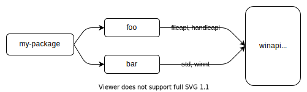

特性
Cargo的通过 "特性" 这一机制来实现 条件编译 和 可选依赖 。
在包 Cargo.toml 的 [features] 表中定义一组命名特性，启用或禁用每个特性。
构建包时，可以在命令行中用 --features 标志启用特性。可以在 Cargo.toml 的依赖声明中启用其依赖的特性。
参阅 特性实例 章节，有关于如何使用特性的一些例子。
[features] 部分
特性在 Cargo.toml 的 [features] 表中定义。
每个特性都指定了一个其他特性的数组，或者它所启用的可选依赖。
下面的例子说明了如何将特性应用于二维图像处理库，其中对不同图像格式的支持可以选择性地包含在内:
[features]
# 定义了一个名为 `webp` 的特性，未传递启用其他特性。
webp = []
有了这个特性的定义，可以用 cfg 表达式 ，在编译时有条件的包含代码，以支持所要求的特性。例如，在包的 lib.rs 里面可以这样:
#![allow(unused)] fn main() { // 有条件的包含模块源码，以支持实现WEBP特性。 #[cfg(feature = "webp")] pub mod webp; }
Cargo使用 rustc --cfg flag 在包中设置特性，源代码中可以用 cfg 属性 或 cfg 宏 检测特性是否存在。
特性可以列出需要关联启用的其他特性。例如，ICO格式关联包含BMP和PNG图像，当启用ico时，应该确保启用其他关联特性:
[features]
bmp = []
png = []
ico = ["bmp", "png"]
webp = []
特性名称可以包括 Unicode XID standard (大多数文字)中的字符，并允许以 _ 或数字 0 到 9 开头，在第一个字符之后还可以包含 - 、 + 或 . 。
default 特性
默认情况下，除非明确启用，禁用所有特性。可以通过指定 default 特性来更改:
[features]
default = ["ico", "webp"]
bmp = []
png = []
ico = ["bmp", "png"]
webp = []
当构建包时，将启用 default 特性，从而又启用了所列出的其他特性。可以通过以下方式来改变这种默认行为:
注意: 选择默认特性要小心。默认特性更容易让用户使用包，而不需要强迫用户仔细选择启用哪些常用特性，但也有一些缺点。 除非指定
default-features = false，否则依赖会自动启用默认特性。 但这可能会难以确保默认特性不被启用，特别是对于在依赖图中出现多次的依赖。 只有每个包都必须确保指定default-features = false才能避免启用它们。 另一个问题是，从默认集合中删除特性将可能是语义化不兼容的变化，所以你应该有信心时才保留这些特性。
可选依赖
依赖可以标记为 "optional" "可选的"，这表示默认不会编译它们。 例如，假设2D图像处理库使用一个外部包来处理GIF图像。可以这样表达:
[dependencies]
gif = { version = "0.11.1", optional = true }
默认，这个可选依赖隐式地定义了一个看起来像这样的特性。
[features]
gif = ["dep:gif"]
这表示只有启用 gif 特性时才会包含这个依赖。
对应的，可以在代码中使用 cfg(feature = "gif") 语法。可以像特性一样启用该依赖，
例如 --features gif (参阅下面的 命令行特性选项)。
有时，你可能不想让特性与可选依赖同名。
比如，这个可选依赖是一个内部的细节，或者你想把多个可选依赖组合在一起，或者想使用更好的名字。
那么在 [features] 表中用 dep: 前缀来指定可选依赖，将禁用该隐式特性。
注意:
dep:语法仅从Rust 1.60开始可用。以前的版本只能使用隐式的特性名称。
例如，假设为了支持AVIF图像格式，库需要启用另外两个依赖项:
[dependencies]
ravif = { version = "0.6.3", optional = true }
rgb = { version = "0.8.25", optional = true }
[features]
avif = ["dep:ravif", "dep:rgb"]
在这个例子中， avif 特性将启用两个列出的依赖。
这也避免了创建隐式的 ravif 和 rgb 特性，避免了单独启用这些特性，使其成为了crate的内部细节。
注意: 另一种可选的包含依赖的方法是使用 特定平台依赖 。 是以目标平台为条件，而不是特性。
依赖特性
包的依赖项的特性可以在其依赖声明中启用。 features 键列出要启用的特性。
[dependencies]
# 启用serde的 `derive` 特性。
serde = { version = "1.0.118", features = ["derive"] }
可以用 default-features = false 来禁用 default 特性 。
[dependencies]
flate2 = { version = "1.0.3", default-features = false, features = ["zlib"] }
注意: 这将无法确保禁用默认特性。 如果另一个依赖包含
flate2而没有指定default-features = false，那么将启用默认特性。 更多细节请参阅下面的 特性联合 。
依赖项的特性也可以在 [features] 表中启用。
语法为 "package-name/feature-name" ，例如:
[dependencies]
jpeg-decoder = { version = "0.1.20", default-features = false }
[features]
# 通过启用 jpeg-decoder 的 "rayon" 特性来支持 parallel 。
parallel = ["jpeg-decoder/rayon"]
"package-name/feature-name" 语法将启用 package-name 这个可选的 "依赖" 包。并不想这样做，
那么可以在 "package-name?/feature-name" 中添加一个 ? ，使其只有在其他项启用了可选依赖时，才会启用其特性。
注意:
?语法仅从Rust 1.60开始可用。
比如，假设在库中添加序列化支持，它需要在一些可选的依赖中启用相应的特性。 可以像这样做:
[dependencies]
serde = { version = "1.0.133", optional = true }
rgb = { version = "0.8.25", optional = true }
[features]
serde = ["dep:serde", "rgb?/serde"]
在这个例子中，启用 serde 特性将启用serde依赖。
它也将启用 rgb 依赖的 serde 特性，但只有在其他项已经启用了 rgb 依赖的情况下。
命令行特性选项
以下命令行标志可以用来控制启用哪些特性:
-
--featuresFEATURES: 启用列出的特性。多个特性可以用逗号或空格分开。 若使用空格，如果从shell中运行Cargo，请确保在所有特性周围使用引号(例如---features "foo bar")。 如果在 工作空间 中构建多个包，可以使用package-name/feature-name语法来指定特定工作空间成员的特性。 -
--all-features: 激活在命令行上选择的所有包的所有特性。 -
--no-default-features: 不激活所选包的default特性。
特性联合
特性对于定义它们的包来说是唯一的。在包上启用一个特性，不会在其他包上启用相同名称的特性。
当依赖被多个包使用时，Cargo会在构建时使用该依赖上联合启用特性。 这有助于只使用该依赖的一个副本。 更多细节请参阅解析器文档中的 特性部分 。
比如，查看 winapi 包，发现它使用了 大量 的特性。
如果你的包依赖于 foo ，它启用了 winapi 的 "fileapi" 和 "handleapi" 特性，
而另一个依赖包 bar 启用了 winapi 的 "std" 和 "winnt" 特性，那么 winapi 包将在联合启用四种特性后构建。

因而，特性表现出 增加性 ，启用特性不应该有禁用功能的效果， 而且启用任意特性的组合通常都是安全的。一个特性不应该引入 语义化不兼容的改变。
例如，如果你想选择性地支持 no_std ，那么 不要 使用 no_std 特性，而是应该使用 "std" 特性，以选择性 启用 std 。比如说:
#![allow(unused)] #![no_std] fn main() { #[cfg(feature = "std")] extern crate std; #[cfg(feature = "std")] pub fn function_that_requires_std() { // ... } }
互斥特性
在极少数情况下，特性之间可能相互不兼容。那么协调依赖图中所有使用的包，以避免同时启用， 如果作不到，可以考虑增加一个编译错误来检测。比如说:
#[cfg(all(feature = "foo", feature = "bar"))]
compile_error!("feature \"foo\" and feature \"bar\" cannot be enabled at the same time");与其使用相互排斥的特性，不如考虑一些其他选择:
- 将功能分成独立的包。
- 当有冲突时，选择其中之一。用
cfg-if包帮助编写更复杂的cfg表达式。 - 源代码允许同时启用这些特性，而使用运行时选项来控制使用哪个特性。比如，使用一个配置文件、命令行参数或环境变量来选择启用哪种行为。
检查特性解析
在复杂的依赖图中，有时很难理解如何在不同的包上启用不同的特性。
cargo tree 命令提供了几个选项来帮助检查和可视化所启用特性。可以尝试:
cargo tree -e features: 这将显示依赖图中的特性。每个特性都会出现，显示哪个包启用了它。cargo tree -f "{p} {f}": 这是更紧凑的视图，显示每个包上启用的特性的逗号分隔的列表。cargo tree -e features -i foo: 这将反转树形图，显示特性如何流入给定的包 "foo"。这可能很有用，因为查看整个图表可能相当大，而且令人不知所措。当你试图弄清楚哪些特性在特定的包上被启用以及为什么要这样做时，可以使用这个方法。请看cargo tree页面底部的例子，了解阅读。
特性解析版本2
可以用 Cargo.toml 中的 resolver 字段指定不同的特性解析器，像这样:
[package]
name = "my-package"
version = "1.0.0"
resolver = "2"
关于指定解析器版本的更多细节，请参见 解析器版本 部分。
版本 "2" 的解析器在一些不需要联合的情况下避免了联合的特性。
具体的情况在 解析器章节 中有描述，简而言之，它避免在这些情况下进行联合。
- 对于目前没有被构建的目标，会忽略在 特定平台依赖 上启用的特性。
- Build-dependencies 和过程宏不与常规依赖共享特性。
- Dev-dependencies 不会激活特性，除非构建目标需要它们(如测试或实例)。
在某些情况下，有必要避免联合。
例如，如果build-dependency启用了 std 特性，而同一个依赖被用作 no_std 环境的常规依赖，启用 std 会破坏构建。
然而，一个缺点是，这可能会增加构建时间，因为依赖会被构建多次(每次都有不同的特性)。
当使用版本 "2" 解析器时，建议检查那些被多次构建的依赖，以减少整体构建时间。
如果不是 必须 要用单独的特性来构建这些重复的包，可以考虑在 依赖声明 中的 features 列表中添加特性，
这样重复的包最后就会有相同的特性(因此Cargo只会构建一次)。
你可以用 cargo tree --duplicates 命令检测这些重复的依赖。它将显示哪些包被多次构建，寻找列出相同版本的条目。
参阅 Inspecting resolved features 获取更多关于解析特性的信息。
对于构建依赖，如果你使用 --target 标志进行交叉编译，则没有必要这样做，因为在这种情况下，构建依赖总是与普通依赖分开构建。
解析器版本2命令行标记
resolver = "2" 的设置也改变了 --features 和 --no-default-features 命令行选项 的行为。
在版本 "1" 中，你只能为当前工作目录中的包启用特性。
例如，在一个有 foo 和 bar 包的工作空间中，如果你在 foo 包的目录下，运行 cargo build -p bar --features bar-feat 命令，就会失败，
因为 --features 标志只允许启用 foo 的特性。
在 resolver = "2" 的情况下，特性标志允许启用任何在命令行中用 -p 和 --workspace 标志选择的包的特性。比如说:
# 这个命令在 resolver = "2" 的情况下是允许的，无论你在哪个目录下。
cargo build -p foo -p bar --features foo-feat,bar-feat
# 这个明确的等价形式适用于任何解析器版本:
cargo build -p foo -p bar --features foo/foo-feat,bar/bar-feat
此外，在 resolver = "1" 的情况下，--no-default-features 标志只停用当前目录下包的默认特性。
如果版本为 "2" ，它将禁用所有工作空间成员的默认特性。
构建脚本
构建脚本 可以通过检查 CARGO_FEATURE_<name> 环境变量来检测包上启用了哪些特性，其中 <name> 是转换为大写的特性名称， - 转换为 _ 。
必须特性
如果没有启用某个特性，可以用 required-features 字段 禁用特定的 Cargo 目标 。
更多细节请参阅链接的文档。
语义化版本兼容
启用特性不应该引入语义化不兼容的变化。 例如，该特性不应该以可能破坏现有用途的方式改变现有的API。 关于哪些变化是兼容的，可以在 语义化版本兼容性章节 中了解更多细节。
在添加和删除特性定义和可选的依赖时应该小心，因为这些有时可能是向后不兼容的变化。 更多细节可以在语义化版本兼容性章节的 Cargo 部分 中找到。简而言之，遵循这些规则:
- 在次要版本中，以下做法通常是安全的:
- 添加 新特性 或 可选依赖 。
- 改变依赖上使用的特性 。
- 以下内容通常不应该在次要版本中去做:
- 移除特性 或者 可选依赖 。
- 将现有的公共代码移到特性之后 。
- 从特性列表中移除特性 。
注意事项和实例见链接。
特征文档和发现
我们鼓励你记录你的包中有哪些特性。
这可以通过在 lib.rs 的顶部添加 doc comments 来实现。
请查看 regex crate source 例子，它被渲染后可以在 docs.rs 上查看。
如果你有其他的文档，比如用户指南，考虑将文档添加到那里 (比如，参阅 serde.rs) 。
如果你有一个二进制项目，考虑在README或项目的其他文档中记录这些特性 (比如，参阅sccache) 。
明确记录特性的设计期望，记录那些认为是 "不稳定" 或不应该使用的特性。 例如，如果有一个可选的依赖，但你不希望用户明确地把这个可选依赖列为特性，那么就把它从记录的列表中排除。
在 docs.rs 上发布的文档可以使用 Cargo.toml 中的元数据来控制文档构建时启用哪些特性。
更多细节请参见 docs.rs metadata documentation 。
注意: Rustdoc 实验性地支持对文档进行注释，以表明使用某些API需要哪些特性。 更多细节见
doc_cfg文档。一个例子是syndocumentation ，你可以看到彩色的方框，其中指出需要使用哪些特性。
发现特性
当特性被记录在库的API中时，这可以使用户更容易发现哪些特性是可用的以及它们的作用。
如果一个包的特性文档不容易获得，你可以看看 Cargo.toml 文件，但有时会很难追踪到它。
如果存在， crates.io 上的 crate 页面有一个指向源码库的链接。
像 cargo vendor 或 cargo-clone-crate 这样的工具可以用来下载源码并检查它。
特性组合
因为特性是一种条件编译的形式，它们需要指数级的配置和测试案例才能100%覆盖。 默认情况下，测试、文档和其他工具，如 Clippy 将只在默认的特性集下运行。
我们鼓励充分考虑策略及工具对于不同特性的组合: 每个项目将有不同的需求，结合时间、资源和覆盖特定场景的成本效益。 常见的配置考虑可能是有/无默认特性，特定的特性组合，或所有的特性组合。